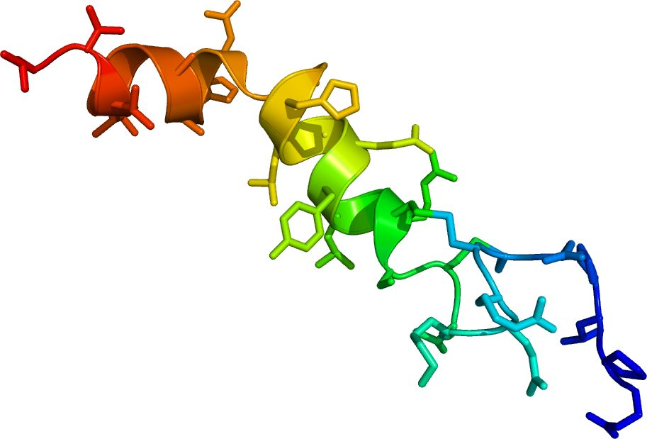

General information only. It does not replace advice from a health professional. For sudden neurological symptoms, call emergency services.


What it is
Narcolepsy is a chronic neurological sleep disease in which the brain cannot properly regulate the states of wakefulness and sleep. It causes intense daytime sleepiness and the intrusion of fragments of REM sleep (dreaming sleep) into wakefulness. It affects 1 in every 2,000-3,000 people, although it is greatly underdiagnosed: the average diagnostic delay is 8 to 10 years. It usually starts in adolescence or young adulthood.
Symptoms
- Excessive daytime sleepiness: the main symptom. An irresistible need to sleep, even in inappropriate situations (in class, during a conversation, while eating). Short naps are refreshing, but sleepiness returns soon after.
- Cataplexy: a sudden loss of muscle tone triggered by emotions, especially laughter, but also surprise or anger. It can be mild (dropping of the jaw or head, or buckling of the knees) or complete (falling to the ground), with consciousness preserved, and lasts seconds or minutes. It occurs only in narcolepsy type 1.
- Sleep paralysis: on falling asleep or waking up, the person is conscious but cannot move for a few seconds or minutes.
- Very vivid hallucinations on falling asleep (hypnagogic) or waking up (hypnopompic).
- Fragmented night-time sleep, with many awakenings.
- Others: automatic behaviours, concentration problems, weight gain, depression.
Types and cause
- Type 1 (with cataplexy or low hypocretin): caused by the loss of the neurons in the hypothalamus that make hypocretin (orexin), a substance that maintains wakefulness. It is thought to be autoimmune: 98% of patients have the genetic marker HLA-DQB1*06:02, and increases in cases were seen after the 2009 H1N1 pandemic flu and one of its vaccines.
- Type 2: without cataplexy and with normal hypocretin; its cause is less well understood and symptoms are usually milder.
Diagnosis
- Medical history and the Epworth sleepiness scale.
- Night-time polysomnography, followed the next day by a multiple sleep latency test: the person is given several opportunities to nap and the time taken to fall asleep and whether they enter REM sleep are measured (two or more entries into REM are characteristic).
- Hypocretin in the cerebrospinal fluid (low in type 1).
- Ruling out other causes of sleepiness: sleep apnoea, lack of sleep, medicines, depression.
Treatment
There is no cure, but symptoms are well controlled in most people:
- Scheduled naps of 15-20 minutes and regular sleep times.
- Medicines for sleepiness: modafinil, pitolisant, solriamfetol and, in some cases, stimulants such as methylphenidate.
- Medicines for cataplexy: sodium oxybate (which also improves night-time sleep and sleepiness), pitolisant and some antidepressants (venlafaxine, clomipramine).
- Orexin 2 receptor agonists: oveporexton (TAK-861) and others have shown, in phase 2 and 3 trials, a very marked improvement in sleepiness and cataplexy by replacing the missing signal. They could become the first treatment aimed at the cause.
See treatment of insomnia and narcolepsy.
Living with narcolepsy
- Driving: only with good symptom control and medical approval; never when sleepy.
- At school and work, adapt timetables and allow naps.
- People with narcolepsy are sometimes labelled as lazy: informing family, teachers and colleagues is important.
- Psychological support and patient associations.
Sources
- Bassetti CLA, et al. Narcolepsy: clinical spectrum, aetiopathophysiology, diagnosis and treatment. Nat Rev Neurol. 2019;15:519-39.
- Bassetti CLA, et al. European guideline and expert statements on the management of narcolepsy in adults and children. Eur J Neurol. 2021;28:2815-30.
- American Academy of Sleep Medicine. International Classification of Sleep Disorders, 3rd edition, text revision. 2023.
- Dauvilliers Y, et al. Oral orexin receptor 2 agonist in narcolepsy type 1. N Engl J Med. 2025;392:1905-16.